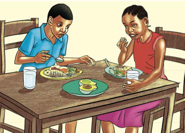

Maelezo ya picha: Watoto wanafanya mazoezi ya mwili uwanjani. Wengine wanaruka kamba na wengine wanajinyoosha.
Maelezo ya picha: Watoto wanafanya mazoezi ya mwili uwanjani. Wengine wanaruka kamba na wengine wanajinyoosha.(a) Kufanya mazoezi ya mwili

Maelezo ya picha: Watoto wawili wanakula mlo kamili mezani. Kuna chakula na glasi za maji mbele yao.(b) Kula mlo kamili
Kielelezo namba 1: uzingatiaji wa kanuni za afya.
Kazi ya kufanya namba 1
Tumia maktaba, matini mtandao au vyanzo vingine vya taarifa kutafuta taarifa kuhusu kanuni za afya. Wasilisha taarifa hizo darasani kwa ajili ya majadiliano.
Mlo kamili
Mlo kamili ni mlo wenye virutubisho vyote vya chakula katika uwiano sahihi. Mlo kamili huundwa na vyakula kutoka katika makundi makuu matatu. Mosi ni vyakula vya kuupa mwili nguvu. Vyakula hivyo vina virutubisho vya kabohaidreti au wanga. Pili, ni vyakula vya kujenga mwili vyenye virutubisho vya protini. Mwisho ni vyakula vya kulinda mwili vyenye virutubisho vya vitamini na madini. Mlo kamili hutupatia virutubisho vyote muhimu ambavyo mwili unahitaji kwa uwiano sahihi. Umuhimu wa mlo kamili ni kuimarisha kinga ya mwili ili kuweza kupambana na magonjwa. Kielelezo namba 2 kinaonesha au kinabainisha mfano wa makundi makuu ya vyakula katika mlo kamili.